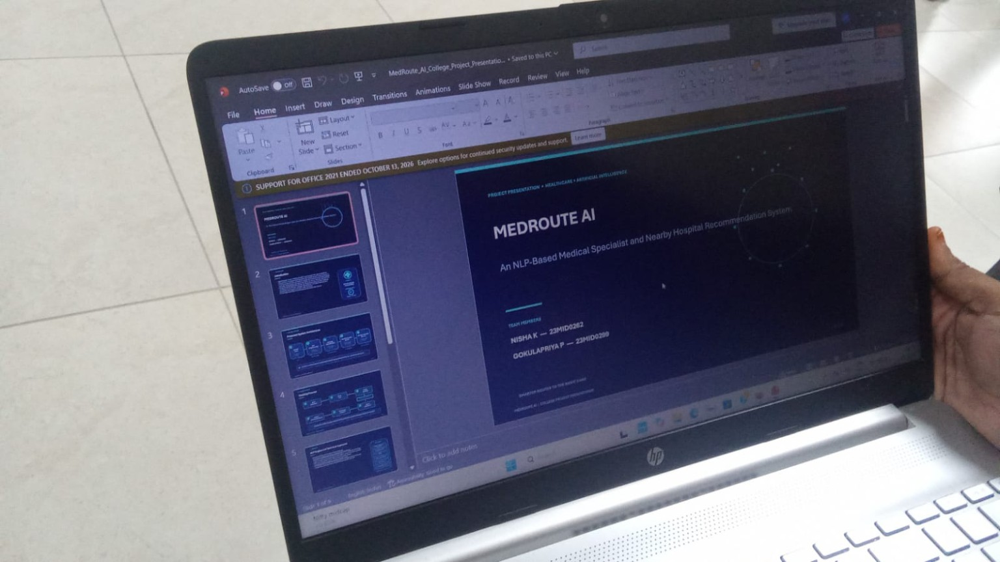
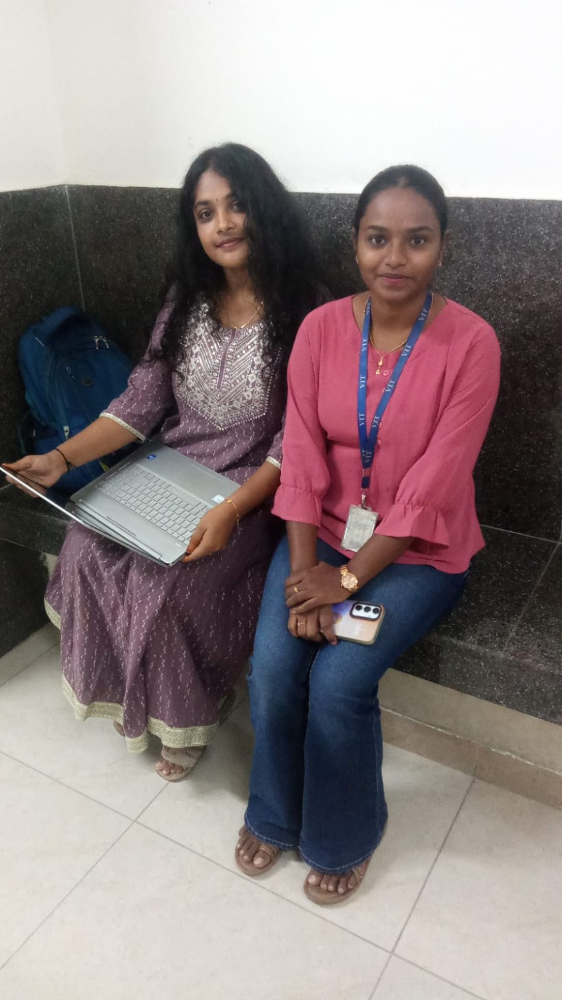

MedRoute AI
An NLP-Based Medical Specialist and Nearby Hospital Recommendation System
MedRoute AI is a web-based healthcare navigation system designed to simplify the process of finding appropriate medical specialists and nearby hospitals. It accepts symptoms entered in natural language, uses NLP techniques to interpret the description and identify a relevant medical specialty, and provides nearby hospital recommendations based on the user's selected location and preferred search radius.
1. Problem Statement
People may find it difficult to identify an appropriate medical specialty from a description of their symptoms and locate nearby hospitals that meet their location preferences.
2. Project Objectives
Interpret symptom descriptions in natural language, identify relevant medical specialties, and simplify location-based discovery of nearby hospitals.
3. Proposed System
A healthcare navigation workflow that combines NLP-based symptom understanding with location- and radius-based hospital discovery.
4. System Architecture
Natural-language symptom input → NLP processing → medical specialty identification → location and radius input → nearby hospital recommendations.
5. Working Process
6. NLP Implementation
NLP techniques are used to process users' natural-language symptom descriptions and support identification of the relevant medical specialty.
7. Key Features
Natural Language Processing · Symptom understanding · Medical specialist recommendation · Location-based hospital discovery · User-friendly healthcare navigation.
8. Expected Outcomes
A streamlined navigation experience that helps users move from a symptom description to relevant specialty guidance and nearby hospital options.
9. Conclusion
MedRoute AI brings symptom understanding and location-based discovery together in a single healthcare navigation concept. It is intended as a navigation aid, not a substitute for professional medical advice or emergency care.

